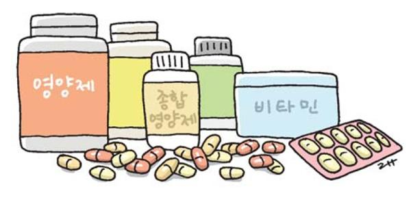

영양제는 왜 필요할까?
① 바쁜 현대인은 영양소가 풍부한 야채와 과일을 충분히 섭취하기가 어렵다.
예를 들어 장을 보러 마트에 가면 손쉽게 먹을 수 있는 가공식품과 간편식이 가능하다. 또한, 사정상 패스트푸드와ㅏ 배달음식을
즐겨 먹는 경우에는 트랜스지방과 칼로리는 많지만, 비타민과 미네랄은 적어서 영양소 불균형이 생기게 된다.
이러한 음식들은 감미료를 포함하는 경우가 많은데, 감미료는 우리 몸의 미네랄을 고갈시키는 특성이 있어서 섭취를
주의해야 한다.
② 두 번째로 평소에 건강식을 하더라도 우리가 신선하다고 생각하는 야채에는 미네랄이 부족한 경우가 있고, 다량의 살충제 축적된 토양에서 자랐을 가능성이 있다. 이는 예전과는 토양의 비옥함 자체가 달라졌다는 뜻이다.
김지영 약사는 “생산량과 상품 외관에 더 집중하게 되면서 화학비료나 살충제를 쓸 수밖에 없고, 이로 인해 영양소는 더 떨어지게 되는 것이다”라고 설명했다. 더불어, 김지영 약사는 “과일을 구매한 후에 보관되는 시간과 조리 과정에서도 영양소가 파괴될 수 있다”라고 말하며, “과일과 채소는 우리의 기대보다 무늬만 건강할 가능성이 있다”라고 답했다. 그 밖에 최근에는 환경오염으로 인해 수은 중독된 등푸른생선, 방사능 오염된 농수산물 등 건강에 대한 위험이 증가했다. 이에 김지영 약사는 음식만으로는 걱정 없이 영양소의 권장 섭취량을 채우기 어렵기 때문에 적절한 영양제로 보충하는 것이 건강을 지키는 방법이라고 말했다.

영양제, 효과가 없는 경우에는 왜 그럴까?
실제로 영양제의 효과에 대해 의문을 제기하는 이유에 대해 김지영 약사는 사람마다 각자에게 잘 맞는 옷이 다르듯, 영양제도 각자에게 맞는 것이 다를 수 있다고 설명했다.
사람마다 생활습관이나 식습관에 차이가 있기 때문에 부족한 영양소도 다를 수 있다. 또한, 나이에 따라 필요한 영양소도 다르고, 하는 일과 활동 정도에 따라서도 차이가 있기 때문에 여러 부분을 고려해야 한다. 이에 김지영 약사는 “개개인의 건강 상태나 생활습관을 고려해서 자신에게 잘 맞는 영양제를 고르는 것이 중요하다”라고 강조했다.
최근에는 온라인으로도 건강기능식품과 비타민제를 구입하기 편해졌는데, 정보의 홍수 속에서 좋은 영양제를 선택하기가 쉽지 않다. 이에 김지영 약사는 영양제 선택에 있어 고려할 사항을 설명했다. 먼저, 비타민은 몸에 들어가서 활성화되어야 효과가 생긴다. 하지만, 라벨에 성분 함량을 높게 표시하더라도 몸속에 들어가서 사용할 수 있는 형태가 아니라면, 먹었을 때 효과가 미미한 것이다. 또한, 원가를 낮추고 이윤을 극대화하기 위해서 값싼 원료를 사용하였는지도 확인할 필요가 있다. 그 외에도 제품이 관련 검사기관의 안전성 및 효능 검사에서 인증을 받았는지, 제조업자가 제품의 신선도를 보장하는지, 첨가제로 유해 물질이 들어가지 않았는지 등 꼼꼼하게 알아봐야 한다. 이렇게 김지영 약사는 자신에게 맞는 영양제를 선택하는 것이 중요하며, 같은 영양소를 먹더라도 양질의 제품을 고르는 과정이 필요하다고 언급했다.
운영자 : 장호중, 여은성, 신동우
전화번호 : 01050526808
출처 : 충북대학교 오픈소스기초프로젝트